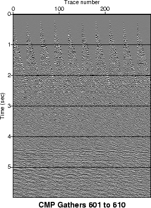

Next: A typical SU processing
Up: Understanding and using SU
Previous: A simple SU processing
Contents
The simplest way to execute a UNIX shell program is to give
it ``execute permission.'' For example, to make our above Plot shell
program executable:
chmod +x Plot
Then to execute the shell program:
Plot 601 610
Here we assume that the parameters cdpmin=601, cdpmax=610 are
appropriate values for the cmgs data set.
Figure 8.1 shows an output generated by the Plot shell
program.
Figure:
Output of the Plot shell program.
|  |
John Stockwell
2007-04-10